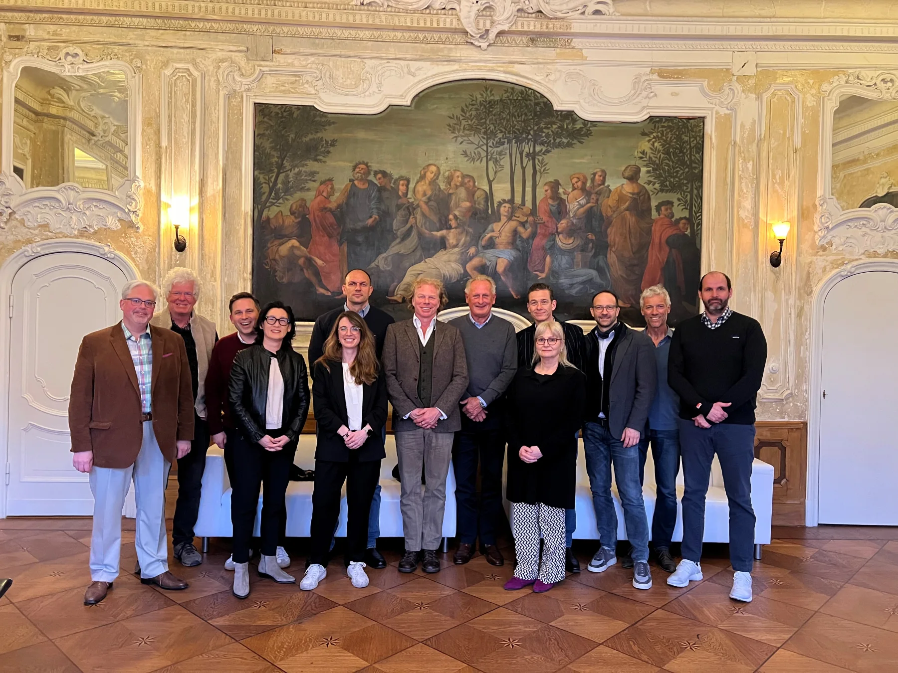

Gesellschaft
Eine regionale Plattform für Wirbelsäulenmedizin.
Die Berliner Wirbelsäulengesellschaft e.V. ist eine interdisziplinär und interprofessionell ausgerichtete medizinisch-wissenschaftliche Gesellschaft mit Sitz in Berlin.
Sie bringt Menschen zusammen, die sich klinisch, wissenschaftlich oder in angrenzenden professionellen Bereichen mit Erkrankungen und Behandlungen der Wirbelsäule beschäftigen.
Unser Auftrag /
Wirbelsäulenmedizin entsteht im Zusammenspiel unterschiedlicher fachlicher Perspektiven, Berufsgruppen und Versorgungsstrukturen.
Die Berliner Wirbelsäulengesellschaft schafft hierfür eine regionale Plattform. Sie fördert den fachlichen Dialog, unterstützt wissenschaftliche Zusammenarbeit und entwickelt Fortbildungsformate mit unmittelbarem Bezug zur Wirbelsäulenmedizin.
Schwerpunkte /
Fachlicher Austausch
Wir fördern die Vernetzung von Menschen aus Diagnostik, Therapie, Wissenschaft und angrenzenden Bereichen und schaffen Raum für einen institutionenübergreifenden fachlichen Dialog.
Fort- und Weiterbildung
Wir organisieren und unterstützen Fachveranstaltungen, Kongresse und Fortbildungsformate und fördern den Transfer aktueller wissenschaftlicher Erkenntnisse in den fachlichen Austausch.
Wissenschaftliche Zusammenarbeit
Wir unterstützen gemeinsame Fragestellungen, Forschungsprojekte, wissenschaftliche Kooperationen und Publikationsaktivitäten auf dem Gebiet der Wirbelsäulenmedizin.
Kooperation
Wir arbeiten mit wissenschaftlichen, gemeinnützigen und öffentlichen Einrichtungen zusammen, wenn dies der Verwirklichung des Vereinszwecks dient.
Regional verankert /
Die Gesellschaft versteht sich als regionale Ergänzung zu bestehenden nationalen und internationalen Fachgesellschaften.
Ihr besonderer Fokus liegt auf der Vernetzung von Menschen und Institutionen in Berlin und Umgebung. Sie schafft damit keine parallele Fachstruktur, sondern ein regionales Forum, das vorhandene Expertise miteinander verbindet.
Entstehung /
Die Berliner Wirbelsäulengesellschaft wurde am 2. April 2025 in Berlin gegründet.
Am 8. Juli 2026 erfolgte die Eintragung in das Vereinsregister beim Amtsgericht Charlottenburg.
Gründungsmitglieder
alphabetisch geordnet
- Prof. Dr. Mario Cabraja
- Dr. Marco Danne
- Dr. Christoph Gill
- Marijke Güttler
- Tony Hartwig
- Dr. Ulf Marnitz
- Prof. Dr. Hans-Jörg Meisel
- Prof. Dr. Matthias Pumberger
- Prof. Dr. Yu-Mi Ryang
- Prof. Dr. Patrick Schuss
- Dr. Thomas Turczynsky
- Prof. Dr. Peter Vajkoczy
- Julian Veelken

GesellschaftBerliner Wirbelsäulengesellschaft e.V.
RegistergerichtAmtsgericht Charlottenburg
RegisternummerVR 42705 B